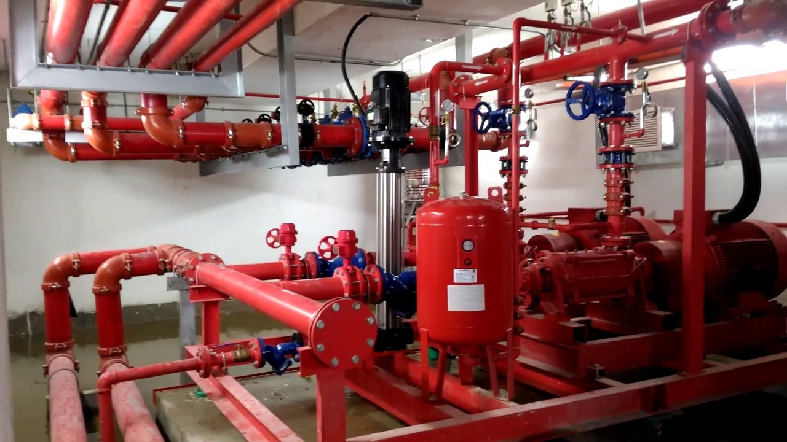

Quản lý và bảo trì hệ thống phòng cháy chữa cháy
Hệ thống phòng cháy chữa cháy (PCCC) và các giải pháp chống cháy đóng vai trò then chốt trong việc bảo vệ an toàn tính mạng và tài sản tại các công trình công cộng, nhà ở, cơ sở sản xuất và kinh doanh. Tuy nhiên, để hệ thống PCCC hoạt động hiệu quả, việc quản lý và bảo trì thường xuyên là vô cùng cần thiết.
Hệ thống PCCC là gì?
Hệ thống phòng cháy chữa cháy là hệ thống bao gồm các thiết bị được sử dụng để phát hiện, báo cháy, ngăn chặn kịp thời đám cháy xảy ra. Nhờ phát hiện và dập tắt cháy nhanh chóng, hệ thống phòng cháy có thể giúp giảm thiểu tối đa các thiệt hại về người và tài sản.

Hệ thống phòng cháy bao gồm 3 phần chính:
- Trung tâm hệ thống báo cháy tự động: đây là tủ điều khiển chính, bao gồm bo mạch điều khiển, các module điện, biến thế và pin dự phòng.
- Hệ thống thiết bị đầu vào: các cảm biến như đầu báo khói, nhiệt, gas, lửa, cùng với các nút nhấn khẩn cấp.
- Hệ thống thiết bị đầu ra: bảng hiển thị, chuông báo động, còi, đèn báo động, đèn exit, và hệ thống quay số tự động.
Sự kết nối và hoạt động đồng bộ của các thành phần này là rất quan trọng để đảm bảo hệ thống phòng cháy có thể phát hiện sớm, báo động kịp thời và kích hoạt các biện pháp dập tắt, sơ tán an toàn khi có sự cố cháy xảy ra. Việc lắp đặt và vận hành cẩn thận các bộ phận này sẽ giúp hệ thống hoạt động hiệu quả
Tiêu chuẩn lắp đặt hệ thống phòng cháy chữa cháy tại Việt Nam
Theo Nghị định số 79/2014/NĐ-CP (văn bản pháp luật quan trọng quy định về các yêu cầu và quy định bắt buộc đối với việc lắp đặt hệ thống PCCC tại các cơ sở ở Việt Nam) và tiêu chuẩn quốc gia TCVN 3890:2009 (tiêu chuẩn quốc gia về hệ thống PCCC, cung cấp các hướng dẫn kỹ thuật chi tiết về thiết kế, lắp đặt và vận hành các hệ thống PCCC), các cơ sở cần phải lắp đặt hệ thống phòng cháy chữa cháy để đảm bảo an toàn về người và tài sản cũng như đạt tiêu chuẩn trong quá trình lắp đặt, phát huy hiệu quả nhất.
Để đáp ứng được tiêu chuẩn lắp đặt hệ thống phòng cháy chữa cháy, khi lắp đặt cần đảm bảo quy trình sau:
- Tiếp nhận thông tin, đánh giá và phân tích công trình PCCC: thu thập thông tin về đặc điểm, yêu cầu an toàn của công trình.
- Khảo sát thực tế công trình và lập kế hoạch thi công: khảo sát hiện trạng để thiết kế phù hợp.
- Thiết kế hệ thống PCCC phù hợp: xây dựng giải pháp PCCC đáp ứng quy chuẩn, vật liệu chống cháy đạt tiêu chuẩn.
- Thẩm duyệt thiết kế với cơ quan PCCC: đảm bảo thiết kế tuân thủ các quy định.
- Lập dự toán, kế hoạch thi công: xác định kinh phí và tiến độ thực hiện.
- Thi công lắp đặt và nghiệm thu: Theo đúng thiết kế được duyệt.
- Nghiệm thu với Cảnh sát PCCC: Kiểm tra và chứng nhận hệ thống đạt yêu cầu.
- Bảo hành hệ thống PCCC: đảm bảo hệ thống hoạt động ổn định, hiệu quả.
Các yêu cầu quản lý và bảo trì hệ thống PCCC
Để quản lý và bảo trì hệ thống PCCC hiệu quả, cần tuân thủ các yêu cầu sau:
- Xây dựng kế hoạch quản lý, kiểm tra và bảo trì định kỳ: xây dựng kế hoạch chi tiết, bao gồm các hoạt động kiểm tra, bảo dưỡng, thay thế linh kiện và thiết bị, đào tạo nhân sự, diễn tập phương án PCCC. Kế hoạch này cần được lập và thực hiện thường xuyên, ít nhất là hàng năm.
- Thực hiện kiểm tra định kỳ các thiết bị PCCC: các thiết bị như bình chữa cháy, họng nước, hệ thống báo cháy, hệ thống chữa cháy tự động, cửa chống cháy cần được kiểm tra định kỳ (hàng tháng, 6 tháng, 1 năm) để đảm bảo hoạt động đúng quy cách.
- Bảo trì, sửa chữa, thay thế kịp thời các hư hỏng: khi phát hiện các hư hỏng, lỗi hoặc hao mòn của thiết bị, cần tiến hành sửa chữa, bảo dưỡng hoặc thay thế ngay lập tức để đảm bảo hệ thống luôn trong tình trạng sẵn sàng.
- Lưu trữ hồ sơ, tài liệu quản lý: ghi chép đầy đủ các hoạt động kiểm tra, bảo trì, sửa chữa, thay thế thiết bị. Lưu trữ các tài liệu kỹ thuật, hướng dẫn sử dụng của từng thiết bị.
- Đào tạo, tập huấn nhân sự: đào tạo, tập huấn cho nhân viên về các quy trình, kỹ năng vận hành, bảo dưỡng hệ thống PCCC. Tổ chức diễn tập phương án PCCC định kỳ.
- Đảm bảo nguồn điện, nước phục vụ PCCC: đảm bảo nguồn điện, nguồn nước cấp cho hệ thống PCCC luôn trong tình trạng ổn định, đủ công suất.
- Tuân thủ các quy định pháp luật: thực hiện đúng các quy định về quản lý, vận hành, bảo trì hệ thống PCCC tại Việt Nam.
Quản lý và bảo trì hệ thống PCCC không chỉ đảm bảo các thiết bị luôn trong tình trạng sẵn sàng hoạt động, mà còn giúp phát hiện và khắc phục kịp thời các hư hỏng, lỗi. Điều này giúp nâng cao hiệu quả của hệ thống, đảm bảo an toàn tối ưu cho công trình và người dân.